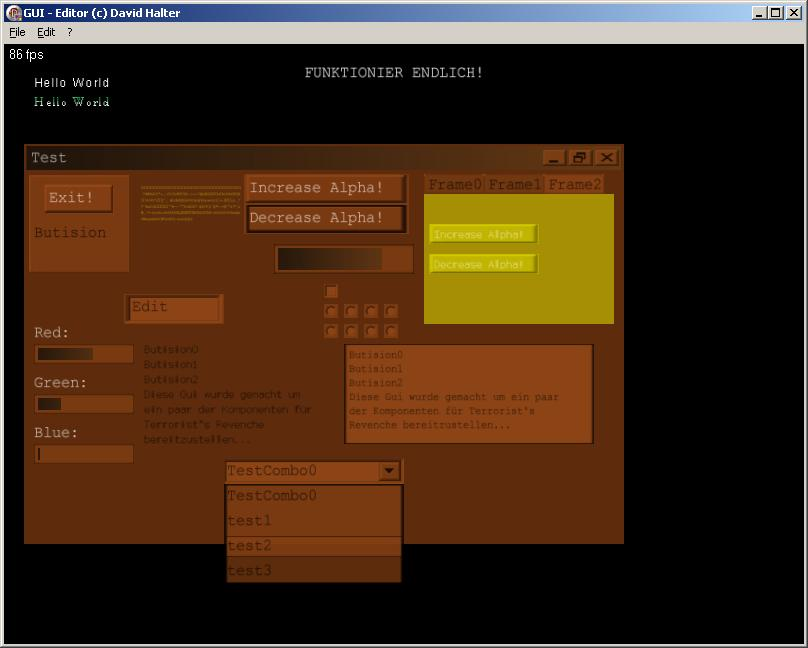
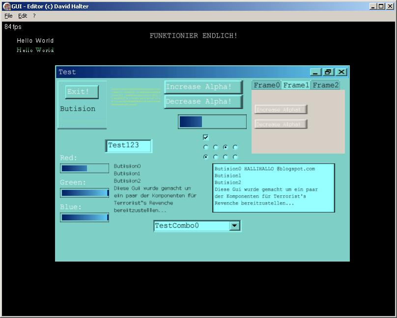
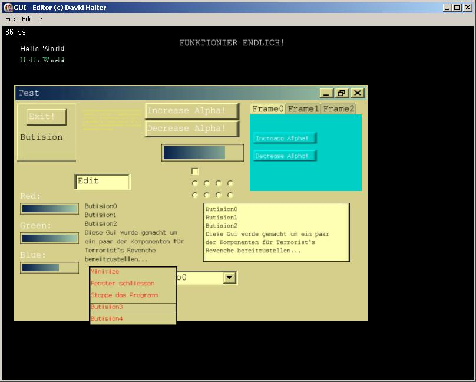

GUI goes 1.0
written on Friday, December 1, 2006
Note
This is about a game I once wrote, which was part of my high school thesis. Unfortunately, it's written in German.
Sooo... Nach einiger Zeit hab ich es endlich geschafft die GUI mal vorläufig abzuschliessen, es sind vorallem einige neue komponenten hinzugekommen und dadurch auch 1500 Zeilen (jetzt 3600). Der Aufwand war enorm, vorallem wurde das ganze durch den grossen Code recht unübersichtlich.
Das einzige was jetzt noch fehlt ist Save & Load und die Scrollbars, wobei ich mir bei der Scrollbar aber nicht ganz sicher bin ob ich dieses Feature noch einbaue, da der Aufwand recht extrem ist und der nutzen für Terrorist's Revenche nicht gerade gross.
Wenn ich aber vom Nutzen spreche, muss ich da auch erwähnen, dass ich jetzt vieles programmiert habe, was nicht gerade viel bringt für mein Projekt, da Elemente wie EditField wahrscheinlich kaum viel genützt werden. Allerdings ist das ganze sehr praktisch, um in anderen Projekten zu nutzen. Da es nur eine Unit ist und die GUI wirklich alles übernimmt, was GUI mässig abläuft, kann diese Unit auch den Ortho Mode stellen, was aber nur eine Option ist.
Schön ist auch, dass die Gui wirklich sehr fehlerfrei läuft und dass alles bis in viele Details ausprogrammiert ist.
Nun jedoch zu den neuen Elementen, dies sind folgende:
- 11: EditField
- 12: TextField
- 13: PopUpMenu
- 14: Combobox
- 15: Frames
- 16: Image
Diese Elemente waren eigentlich alle ziemlich schwer einzubinden ausser dem Image (welches übrigens auch blending beherrscht). Beim EditField musste ich X Key-Messages abfangen, das ganze wurden dann so 100-200 Zeilen Code, der seeeeeehhhhhhr kompliziert ist.
Die Frames hab ich einfach mit Pointern auf andere Fenster gemacht, dadurch kann ich auf diese Fenster verändern und das ganze Frame verändert sich, die Frames sind also eher Pseudo mässig da und haben nur den Zweck das ganze etwas leichter zu machen.
Die Comboboxes und PopUpMenus waren dann auch wieder etwas recht kompliziertes, da ich da bei den MouseEvents extrem aufpassen musste, dass ich immer das ganze Feld mit einbeziehe, ausserdem ist ja bei mir alles möglichst Speed optimiert und darum wird solches Zeug halt schwer.
Nun zu ein paar Screenshots:
  Das sind einfach ein paar Spielereien, ausserdem werde ich in nächster Zeit einen neuen Skin entwickeln (nicht diesen besch...ränkten Windows - Style.
Die Änderungen der letzten Zeit:
- 1.11.06: First Relase, 7 Grundverschiedene Elemente und 8 verschiedene Mouse/Key Routinen.
- 4.11.06: Maximize verbessert, da gab es zwei bugs, man konnte das fenster maximiert verschieben und Maximiert wurde auch, wenn nur ein downclick erfolgte.
- 9.11.06: SetPointers so verändert, dass jetzt die Pointer immer richtig gesetzt sind.
- 11.11.06: deinitialisierung verbessert, wegen memory leaks
- 13.11.06: Objektorientierte Struktur verbessert, onDestroyEvent geadded. Mouseevents grossteils umprogrammiert, zwecks makros auf rechter maustaste.
- 15.11.06: PopUpMenu, Textlist und Frames soweit vorbeireitet, dass nur noch die Events gemacht werden müssen.
- 20.11.06: Images funktionieren nun vollständig, mit Blending und Farben. Neue Art des Schriften ladens hinzugefügt, die zwar schon funktioniert, aber nicht sonderlich schön aussieht.
- 23.11.06: Mouse Events wieder fest umgeschrieben PopUpMenu funktioniert in Grundzügen
- 25.11.06: Edit funktioniert nun vollständig, man kann nun schreiben usw neue Art Schriften zu laden hinzugefügt, um die Breiten der Schriften Edit tauglich zu machen. PopUpMenu zum grössten teil funktionierend gemacht Makros geschrieben für einige funktionen, zb um mit einem mausklick die Progressbar-länge zu verändern.
- 27.11.06: Textlist läuft nun. Texturen von PopUpMenu/Combobox verbessert.
- 28.11.06: Skins überarbeitet, nun kann man jpgs tgas und bmps laden.
- 30.11.06: EditField soweit fertiggestellt; Drag-Bug behoben
- 31.11.06: EditField besitzt nun einige Funktionen mehr, man kann es fast wie ein Word Dokument bedienen. Maximize - Bug behoben, einmal wurde der Boolean Wert verkehrt herum abgerufen. CaptionBar verschönert.
- 1.12.06: Nach nun genau einem Monat, nach dem First Release, ist das Release 1.0 draussen.
Es sind etwa 1400 Zeilen dazu gekommen und jede Menge neue Elemente. Das was sicher noch kommt wird eine Ladefunktion sein, allerdings wird diese bis auf weiteres warten müssen, zuerst muss die GUI in Terrorist's Revenge ausgiebig getestet werden.
blog comments powered by Disqus